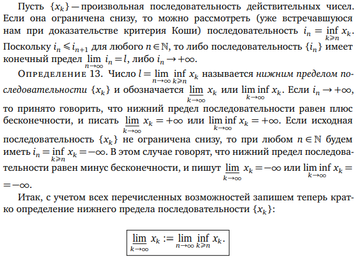
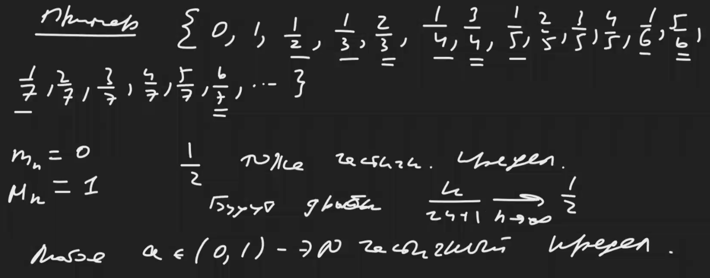

Ivan Borisov
Computer science student at ITMO University. Interested in programming, Linux and Emacs.
Telegram
GitHub
Instagram
Home
About
Analysis
Верхний и нижний пределы
Зорич:  Пример ряда несократимых рациональных дробей: 
Заметки с ссылками на эту страницу
Analysis